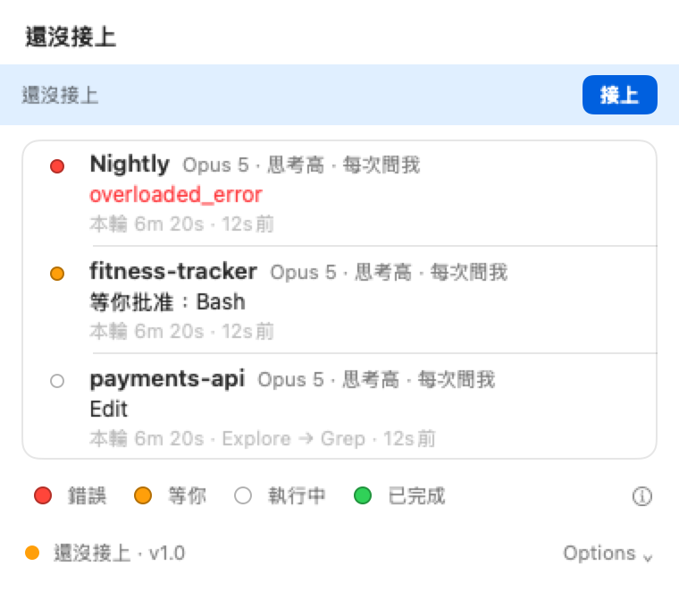
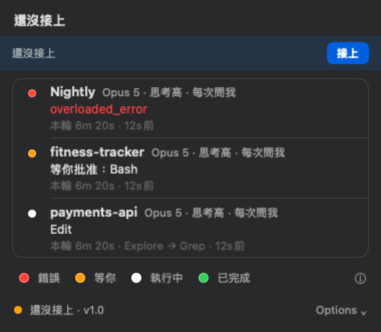
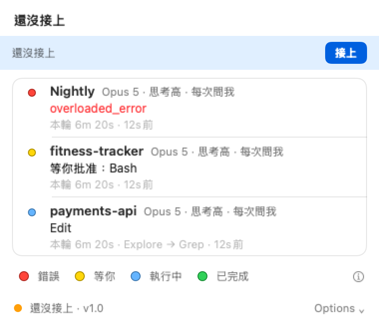

Change 2 面板證據（NSHostingView 離屏）
產圖外觀：淺底以 .aqua、深底以 .darkAqua 明確指定（機器外觀 NSAppearanceNameDarkAqua 不影響）。背景為純色，非真實 popover 材質——版面與色點顏色可信，材質不可信。「重設」在預設 palette 下為 disabled（灰字）。
panel-default-empty-light.png（380×250 pt）

panel-default-empty-dark.png（380×250 pt）

panel-default-3rows-light.png（380×331 pt）

panel-default-3rows-dark.png（380×331 pt）

panel-custom-3rows-light.png（380×331 pt）

panel-custom-3rows-dark.png（380×331 pt）